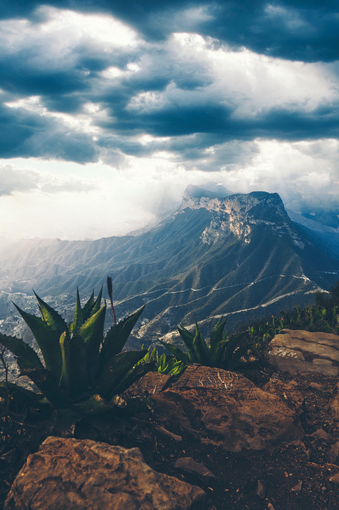
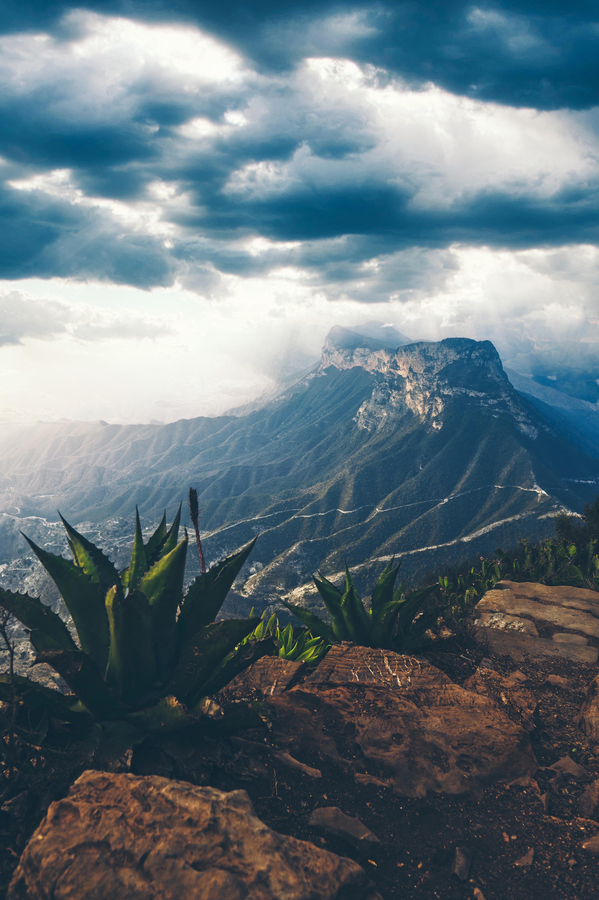

The Nature
Mexico may be known for its beaches and desserts, and maybe a few important cities like Mexico City and San Miguel de Allende, but what many people don't realize is that it's also a country with amazing, awe-inspiring natural beauty. When it comes to flora, fauna, and amazing landscapes, Mexico is surprisingly diverse. In fact, it's one of the top five countries in the world in terms of biodiversity. This is because Mexico's topography is highly varied and its geographic situation places it between distinct ecozones. Mexico has so many stunning natural areas that it's very hard to select only ten, but here is a small sample of some of the amazing landscapes and natural features that you can enjoy on a trip to Mexico. Almost anywhere you go in Mexico you will encounter stunning landscapes, beautiful valleys and unique natural formations. The country’s sheer size means that dozens of different types of ecosystems and climates await curious adventurers. Here are some of Mexico’s natural wonders; make sure you don’t miss out on seeing them during this lifetime.
 

Places you can't miss!:
- Lake Chapala, Jalisco
- Hierve el Agua, Oaxaca
- Copper Canyon, Chihuahua
- Marieta Islands, Nayarit
Back to Top
The Culture
Mexican culture is a hugely diverse domain that encompasses vast differences in identity. The variety of influences throughout Mexican history, from the ancient Mayan and Aztec civilizations to the domineering European presence, has come to shape and define the enthralling country it is today. The culture in Mexico is a product of the process of blending of indigenous practices and traditions with the Spanish colonial presence that had such a profound impact on all aspects of life. There has been a constant struggle for Mexican people throughout history to define and promote Mexican identity. However, with so much political instability, wars with the United States and France, and colonial occupation, Mexican society has often struggled to form a cohesive identity. As a result, Mexican art and literature have had somewhat of a tumultuous history, too. There is an extensive array of beautifully preserved Mayan and Aztec buildings, and many of their traditions have been upheld. However, with the effects of colonization, much of Mexican literature borrowed techniques and ideas from Europe. It wasn't until the post-revolutionary period that the arts in Mexico started to develop their own unique characteristics, which soon producing some of the most celebrated figures in international art and literature. Whether it's the inspirational Frida Kahlo or the charm of Mariachi music that you want to know more about, this section will provide you with fascinating information into the complex world of Mexican culture.

Back to Top